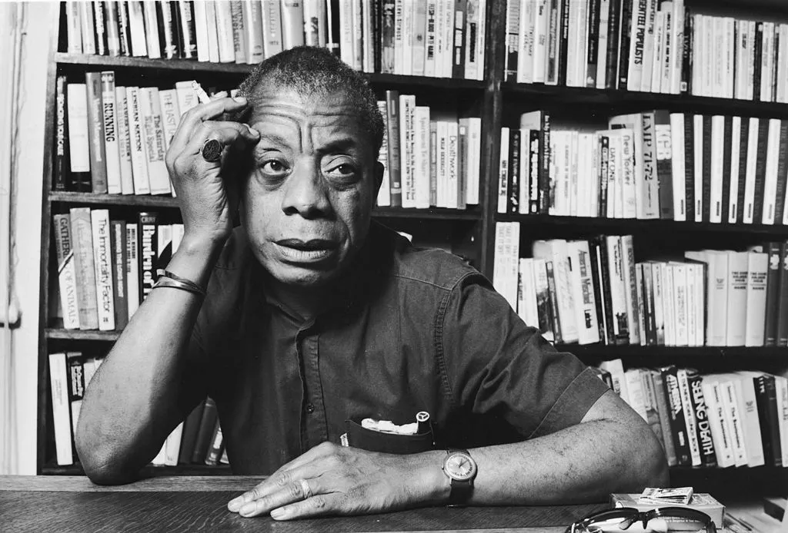

James Baldwin
The activist and author who unapologetically shared his truth.

The timeline of James Baldwin's life:
- 1924 - Born in New York City
- 1938 - Went to a predominantly white school
- 1948 - Left USA for Paris to escape the feeling of hopelessness
- 1956 - The year his book 'Giovanni's Room' got published.
- 1987 - Passed away in Saint-Paul-de-Vence, France
If you're interested in learning more, check out his Wikipedia page and his documentary.